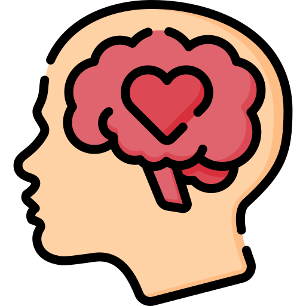
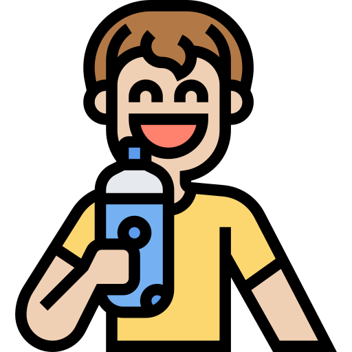

Mental Health and Wellbeing
Mental health is just as important as physical health.
Here are some ways to take care of your mental wellbeing:
- Stay connected with friends and family to build strong relationships.
- Practice mindfulness or meditation to help manage stress.
- Get enough sleep each night to support mood and cognitive function.
- Seek help if you feel overwhelmed, anxious, or depressed.

Exercise Recommendations
Regular physical activity is crucial for maintaining a healthy lifestyle.
Here are some exercise recommendations:
- Engage in at least 60 minutes of moderate to vigorous physical activity daily.
- Include activities that strengthen muscles and bones, like running, jumping, or playing sports.
- Limit sedentary time by taking breaks from screen time and getting up to move.

The Importance of Hydration
Staying hydrated is vital for overall health and can improve energy levels, brain function, and physical performance:
- Aim to drink at least 8 glasses of water a day.
- Carry a water bottle with you to encourage regular sipping.
- Limit caffeinated and sugary beverages that can lead to dehydration.

Nutrition Tips
Good nutrition is essential for growth and development, especially during the formative years of the Alpha Generation.
Here are some tips to help you eat healthier:
- Include a variety of fruits and vegetables in your diet.
- Choose whole grains like brown rice and oats over refined grains.
- Opt for lean proteins such as chicken, fish, and legumes.
- Limit your intake of sugary drinks and snacks.
- Stay hydrated by drinking plenty of water throughout the day.